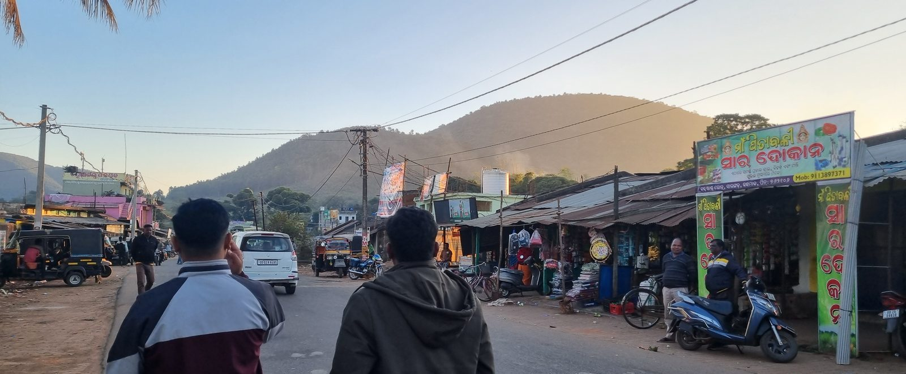
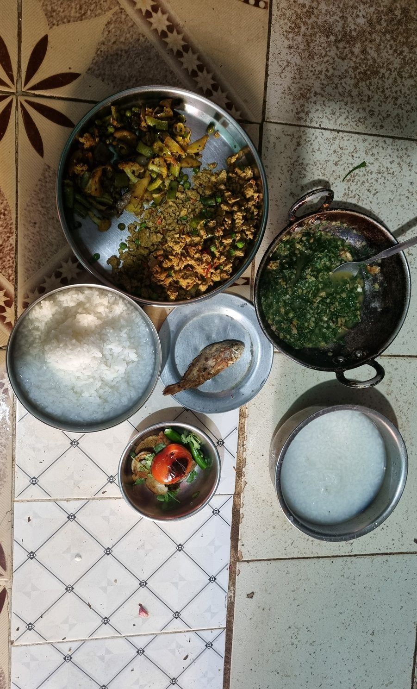
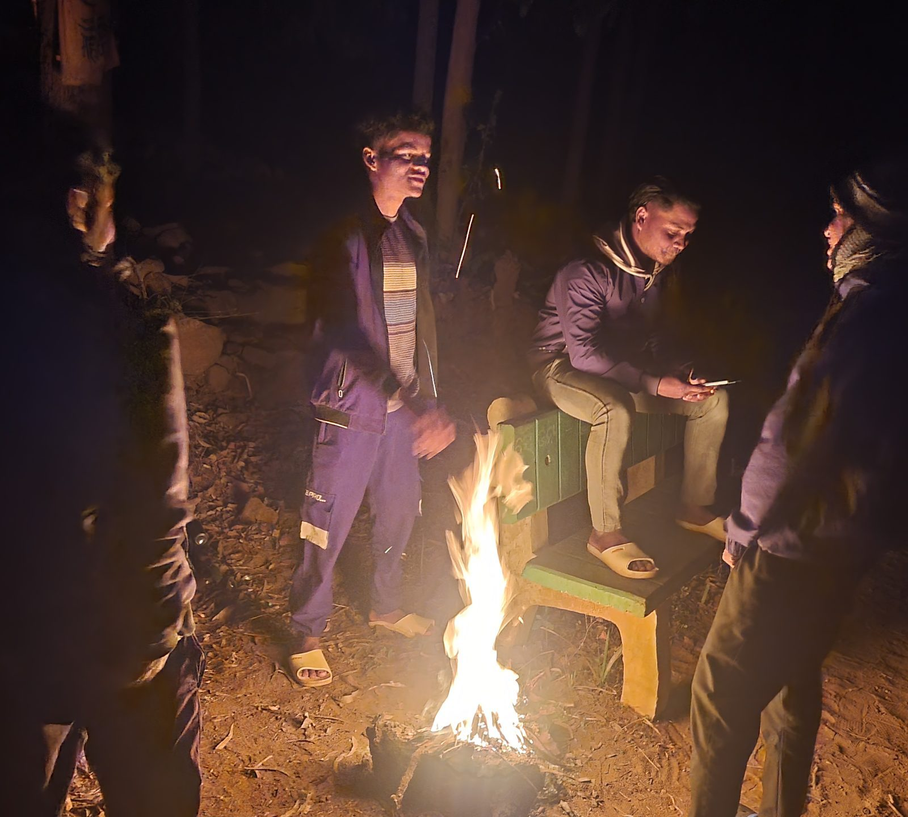

Sarangada · Kandhamal · Odisha
Maati Ra Katha
The Weight of Belonging
A seven-day village life-exchange being prepared in Sarangada, Kandhamal. It is not open yet.
The market road under monsoon cloud, Sarangada · Photographed with permission Sorting the harvest on bare earth, Sarangada · Photographed with permission
Where this standsWhere this stands
This site is what exists so far. Nothing here is a booking, and nothing is published before it is verified on the ground.
- Status
- PilotInvitation-only while host, safety and consent details are settled.
- Ground
- 20.227°NApproximate Sarangada coordinate, Nuagaon Block, Kandhamal.
- Spoken
- Odia · KuiOdia in the market and the school. Kui in the older Kondh homes.
- Rule
- Consent firstNo route, photograph or stay is public until it is verified.
Four ways in
Read, look, and find the road


From the archive
Sarangada, as it was on the day
 Paddy terraced into the hillside
Paddy terraced into the hillside
 The whole plain under one cloud
The whole plain under one cloud
 Cattle out below the hill, paddy turning
Cattle out below the hill, paddy turning
 The tank, and the railings someone painted
The tank, and the railings someone painted
 The bike left on the ridge track at dusk
The bike left on the ridge track at dusk

Market road, hills behind
Rice, dal and greens
The fire after dark All 40 photographsFrom the journal
Answered in the village, then written down here

The stories the soil tells
There are hundreds of stories here. They don't happen in grand, orchestrated events. They happen quietly at dawn, when the mist still hangs over the hills.
Why I am building this slowly
Every version of this idea that moves fast ends the same way. Somebody books a week, arrives with a camera, gets shown a performance.
No fake experiences.
Just life as it is.
This is being built slowly. Host, safety and consent details come before visitors.
Sarangada · Nuagaon Block · Kandhamal · Odisha · 20.227°N, 84.124°E